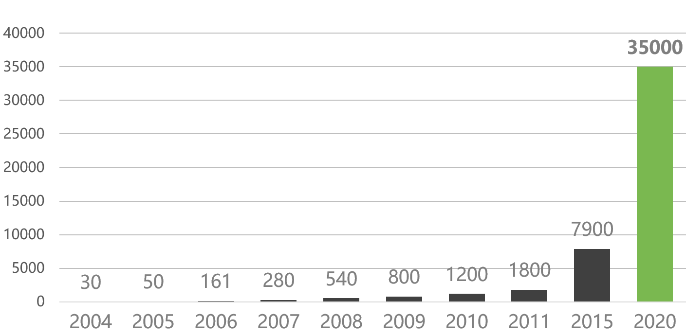

1. 数据生产方式的改变
1. 数据生产方式的改变
2. 人类越来越依赖数据
究竟什么是大数据？
定义：海量数据或巨量数据，其规模巨大到无法通过目前主流的计算机系统在合理时间内获取、存储、管理、处理并提炼以帮助使用者决策。
目前工业界普遍公认的大数据的特点为可以概括为4V+1C：
存储的数据量巨大，PB级别是常态，因而对其分析的计算量也大。
数据的来源及格式多样，数据格式除了传统的结构化数据外，还包括半结构化或非结构化数据，比如用户上传的音频和视频内容。而随着人类活动的进一步拓宽，数据的来源更加多样。
数据增长速度快，而且越新的数据价值越大，这就要求对数据的处理速度也要快，以便能够从数据中及时地提取知识，发现价值。
需要对大量的数据进行处理，挖掘其潜在的价值，因而，大数据对我们提出的明确要求是设计一种在成本可接受的条件下，通过快速采集、发现和分析，从大量、多种类别的数据中提取价值的体系架构。
对数据的处理和分析的难度大。
大数据与云计算的关系
G=f(x)
云计算的长定义
云计算是一种商业计算模型。它将计算任务分布在大量计算机构成的资源池上，使各种应用系统能够根据需要获取计算力、存储空间和信息服务。
云计算的短定义
云计算是通过网络按需提供可动态伸缩的廉价计算(等?)服务。
从现状上看，云计算具有以下特点：
“云”具有相当的规模，谷歌云计算已经拥上百万台服务器，亚马逊、IBM、微软、Yahoo、阿里、百度和腾讯等公司的“云”均拥有几十万台服务器。“云”能赋予用户前所未有的计算能力。
云计算支持用户在任意位置、使用各种终端获取服务。所请求的资源来自“云”，而不是固定的有形的实体。应用在“云”中某处运行，但实际上用户无须了解应用运行的具体位置，只需要一台计算机、PAD或手机，就可以通过网络服务来获取各种能力超强的服务。
“云”使用了数据多副本容错、计算节点同构可互换等措施来保障服务的高可靠性，使用云计算比使用本地计算机更加可靠。
“云”的特殊容错措施使得可以采用极其廉价的节点来构成云；“云”的自动化管理使数据中心管理成本大幅降低；“云”的公用性和通用性使资源的利用率大幅提升；“云”设施可以建在电力资源丰富的地区，从而大幅降低能源成本。因此“云”具有前所未有的性能价格比。
云”的规模可以动态伸缩，满足应用和用户规模增长的需要。
云”是一个庞大的资源池，用户按需购买，像自来水、电和煤气那样计费。
“云”的特殊容错措施使得可以采用极其廉价的节点来构成云；“云”的自动化管理使数据中心管理成本大幅降低；“云”的公用性和通用性使资源的利用率大幅提升；“云”设施可以建在电力资源丰富的地区，从而大幅降低能源成本。因此“云”具有前所未有的性能价格比。
云计算业务按提供的服务类型分可以分为三类：
IaaS:
PaaS:
SaaS：
云计算模型按部署模式可（大致）分为四类：
特征：向社会大众开放，任何符合条件的个人或者单位都可以租赁并使用云资源。
特征：只供一个企业或者单位内的人员使用，其他的人和机构无权租赁和使用。
分类：
特征：只供两个或以上的特定企业或者单位（一般是特定行业或者圈子）内的人员使用，其他的人和机构无权租赁和使用。
特征：由两个或者以上不同类型的云组成，但对用户感觉就像使用一个云端资源。
云计算在国外有三个公认的先行企业：
率先在全球提供了弹性计算云EC2（Elastic Computing Cloud）和简单存储服务S3（Simple Storage Service），为企业提供计算和存储服务。
收费的服务项目包括存储空间、带宽、CPU资源以及月租费。
AWS服务的种类非常齐全
全球用户数量已经超过100万
最大的云计算技术的使用者
谷歌搜索引擎就建立在分布在200多个站点、超过100万台的服务器的支撑之上，而且这些设施的数量正在迅猛增长
采用Google Docs之类的应用，用户数据会保存在互联网上的某个位置，可以通过任何一个与互联网相连的终端十分便利地访问和共享这些数据
谷歌已经允许第三方在谷歌的云计算中通过Google App Engine运行大型并行应用程序
发表学术论文的形式公开其云计算三大法宝：GFS、MapReduce和Bigtable，并在美国、中国等高校开设如何进行云计算编程的课程
微软于2008年10月推出了Windows Azure操作系统。Azure(译为“蓝天”)是继Windows取代DOS之后，微软的又一次颠覆性转型。
微软的云平台包括几十万台服务器.
Azure的底层是微软全球基础服务系统，由遍布全球的第四代数据中心构成。
微软将为Windows Azure用户推出许多新的功能，不但能更简单地将现有的应用程序转移到云中，而且可以加强云托管应用程序的可用服务，充分体现出微软的“云”+“端”战略。
在中国，微软2014年3月27日宣布由世纪互联负责运营的Microsoft Azure公有云服务正式商用，这是国内首个正式商用的国际公有云服务平台。
群雄逐鹿：
企业IT系统的开销主要分为三个部分：
James Hamilton的统计数据显示，5万个服务器的数据中心和1000个服务器的数据中心的运营成本对比：
| 项目 | 中型数据中心成本 | 特大型数据中心成本 | 比率 |
|---|---|---|---|
| 网络 | $95每Mb/秒/月 | $13每Mb/秒/月 | 7.3 |
| 存储 | $2.20每GB/月 | $0.40每GB/月 | 5.7 |
| 管理 | 每个管理员约管理140个服务器 | 每个管理员管理1000个服务器以上 | 7.1 |
更大型的数据中心服务器的数量级可以达到几十万、百万甚至千万级别。运营成本将进一步降低。
| 价格 | 地点 | 可能的定价原因 |
|---|---|---|
| 3.6美分 | 爱达荷州 | 水力发电，没有长途输送 |
| 10.0美分 | 加州 | 电力在电网上长途输送，湾区的输送线有限，加州不允许煤电 |
| 18.0美分 | 夏威夷 | 发电的能源需要海运到岛上 |
很多企业选择将数据中心建设在电价便宜的地方
甚至将业务在多个数据中心轮转，利用季节电价
典型的网站资源利用率：
普通企业如何建设机房？
云计算：
成本优势主要来源于其庞大的规模
云计算将计算变成了大众用得上和用得起的“水和电”
普通企业不用采购硬件，不用开发和安装软件
可以快速部署业务
可以跟随客户和业务规模动态调整，伸缩系统规模
可以方便地共享数据
普通用户无需自建机房，申请账号付费即可使用服务
……